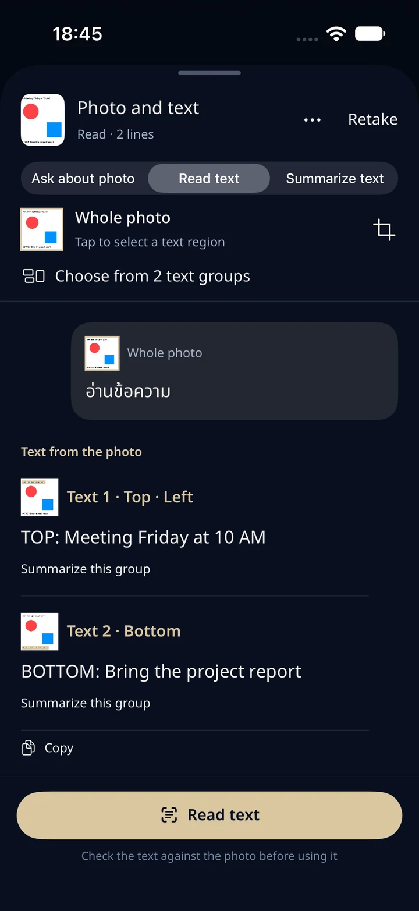

ภาพหนึ่งใบ บทสนทนาหนึ่งเรื่อง
กดค้างแล้วพูด ปล่อยเพื่อส่งคำถาม
กดปุ่มกลางค้างแล้วพูดด้วยภาษาที่เลือก ไทยหรืออังกฤษ แอปถ่ายภาพพร้อมรับเสียง ปล่อยเพื่อส่ง แล้วอ่านและฟังคำตอบเมื่อประมวลผลเสร็จ
- ถามเกี่ยวกับสิ่งของ สี และรายละเอียดที่มองเห็น
- ถามต่อในภาพเดิมผ่านเครื่องมือทดสอบ โดยเก็บบริบทข้อความล่าสุดแบบใช้หน่วยความจำน้อย
- คำตอบเริ่มต้นเป็นภาษาไทย ขอให้ตอบภาษาอังกฤษได้
